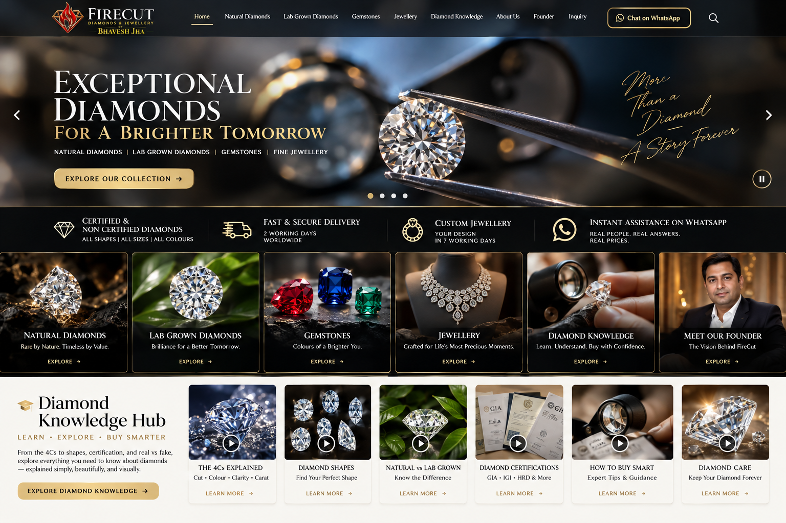
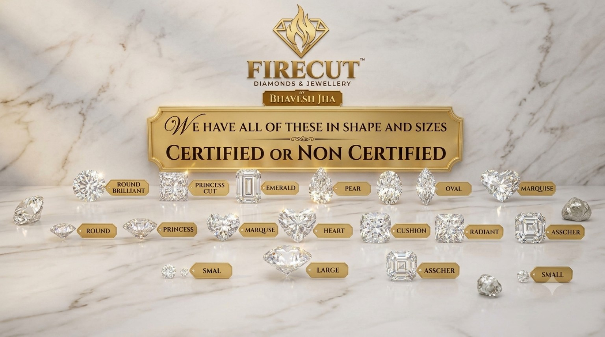
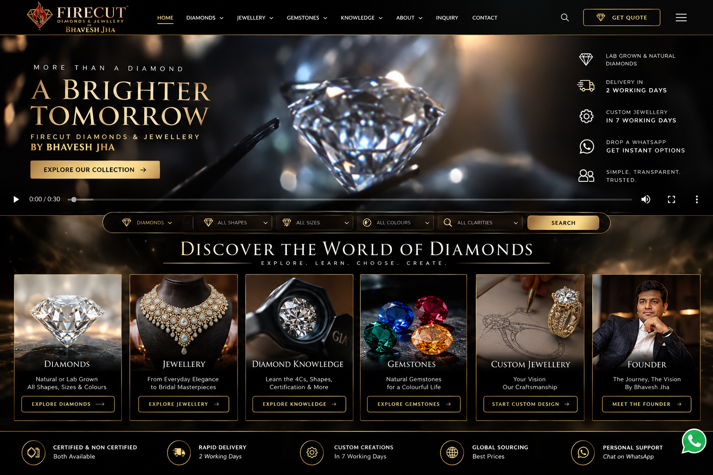

▶
The 4Cs
Cut • Colour • Clarity • Carat — and the fifth C: Craftsmanship.

DIAMOND KNOWLEDGE HUB
An exciting visual classroom covering the 4Cs, craftsmanship, shapes, certification, natural vs lab-grown, CVD vs HPHT, buying smart and diamond care.
VISUAL LEARNING
Use the motion cards to explore the basics before sending an enquiry.
Cut • Colour • Clarity • Carat — and the fifth C: Craftsmanship.
Understand origin and growth process in simple language.
Why documentation matters and how to match a report to the actual stone.

See how different outlines change the look and personality of a diamond.
The fifth C: how a stone and jewellery are brought together beautifully.

Know what to ask, what to compare and what should be clear before you buy.